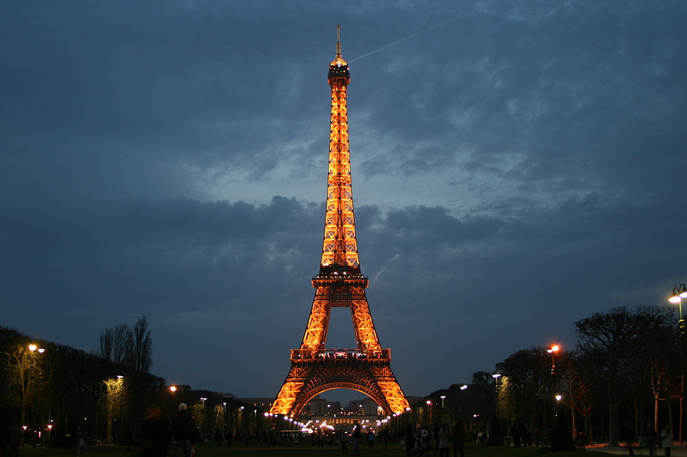

Cutural facts
France is the most famous tourist destination in the whole world. According to a report published in 2014 by the World Tourism Organization, France had welcomed some 83.7 million visitors.
"Liberté, égalité, fraternité" Liberty, equality, fraternity is the quintessential motto of France that a lot of people know. It first appeared during the French Revolution (1789-1799) and today it appears on coins and stamps.
Languages
The official language of France is French, but many other languages are also spoken in the country, although they do not have the same status.
- Occitan
- Provençal
- Gascon
- Corsican
- Catalan
- Basque
- Alsatian
- Dutch
- Breton
Food
In 2010, French food was declared Intangible Cultural Heritage of Humanity by UNESCO.
Cheese stands out in French gastronomy. In each region they are specialists in at least one type, to such an extent that it is estimated that there are more than 400 different varieties.
- Breakfast
- Toasts (tartines)
- Croissants
- Chocolate Croissants (pain au chocolat)
- Apple cupcakes (chausson aux pommes)
- Conch with raisins (pain aux raisins o escargot)
- fruit juice
- hot drink (coffee, tea or hot chocolate.)
- Lunch
- Quiche Lorraine
- Crepes
- Duck confit
- Cassoulet
- Dinner
- Coq au vin
- Ratatouille
- Beef bourguignon
Current Events
- Politics
- Parliament adopts draft law providing a safer framework for regional languages
- Emmanuel Macron va annoncer la suppression de l’ENA (National School of Administration)
- Covid-19
- Vaccination against Covid-19: more than 10 million French people have received at least one dose
- Compulsory vaccination is "necessary in a democratic society, " says European Court of Human Rights
- Sports
- Currently France only has one team in the Huefa Champions League, Paris Saint German, which has to face Bayern Munch of Germany, in the quarterfinals of this competition.
- Cyrille Guimard is back on Cyclism for a new column. The former coach of the France team took stock of the first part of the season and also raised various hot topics such as the postponement of Paris-Roubaix, the racist attacks suffered by Nacer Bouhanni (Arkéa-Samsic), the possible arrival of Peter Sagan at Deceuninck - Quick Step or the new UCI regulations which arouses some controversy
Tourist Hotspots
- Eiffel Tower
- Louvre Museum
- Palace of Versailles
- Côte d'Azur
- Mont Saint-Michel
- Loire Valley Châteaux
- Elysian Fields
- Notre Dame Cathedral

Average Travel Pricing
according to BudgetYourTrip.com. A trip to France costs on average $ 222 per day. Hotel prices for couples average $ 299. So a trip of two people in a week costs an average of $ 3,111.
Purchasing a ticket
- Eiffel Tower
- Adult rate: $31 Child rate: $8
- Louvre Museum
- $18. Online Purchasing: $20
- Palace of Versailles
- Basic: $48 Including Musicals: $58
- Mont Saint-Michel
- $12 for adults and free for EU citizens or permanent residents of France up to age 25 (otherwise $10 for 18 to 25-year olds and free for all children under 18).
- Notre Dame Cathedral
- Tower: $10 Crypt: $7